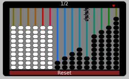
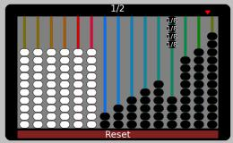
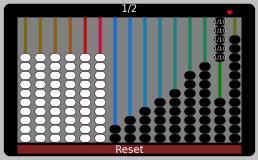
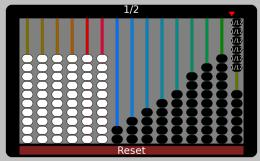
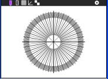
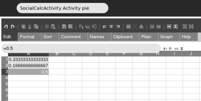

Answers to the Abacus Worksheet¶
Ways to make 1/2¶
Ways to make 1/2 just using one string






To make 1/2 just using one string, the fraction denominator must be divisible by 2. The string must contain an even number of beads, 2 4 6 8 10 12
Ways to make 1/2 with more than one string
1/3 + 1/6 = (2+1)/6 = 3/6 = 1/2
1/3 + 2/12 = (4+2)/12 = 6/12 = 1/2
1/4 + 1/6 + 1/12 = (3+2+1)/12 = 6/12 = 1/2
1/4 + 2/8 = (2+2)/8 = 4/8 = 1/2
1/4 + 3/12 = (3+3)/12 = 6/12 = 1/2
3/9 + 2/12 = (12+6)/36 = 18/36 = 1/2
2/8 + 3/12 = 1/4 + 1/4 = 1/2
1/6 + 4/12 = (2+4)/12 = 6/12 = 1/2
1/6 + 3/9 = (3+6)/18 = 9/18 = 1/2
1/6 + 2/8 + 1/12 = (4+6+2)/24 = 12/24 = 1/2
2/6 + 2/12 = (2+1)/6 = 3/6 = 1/2
1/5 + 3/10 = (2+3)/10 = 5/10 =1/2
2/5 + 1/10 = (4+1)/10 = 5/10 =1/2
Is this all of the possibilities?
See Diophantine equations, computer programs including ones written in TurtleArt can find all the solutions by trial and error.
You can paste this code into Turtle Art to calculate all the possibilities
Ways to make 1/3¶
This program can be modified for 1/3 and 2/3 (and with more work it could be used for the Caacupé abacus). Circled below, the program above has 0.5 replaced with 1/3 to find the ways of making 1/3
4/12
3/9
2/8 + 1/12
1/6 + 2/12
2/6
1/4 + 1/12
1/3
Other representations of fraction addition¶
Paint¶
You need to guess the centre of the circle and angles of the pie slice lines. The full circle or 360 degrees represents ‘1’ so the 1/3 and 1/6 pie slices are
360/3 =120 degrees360/6 = 60 degreesYou can use either the polar grids of Ruler

or TurtleArt to help visualise the anglesTurtle Art¶
Copy this code into TurtleArt to generate the pie for 1/3 + 1/6

It can be modified for other pie slice sizes. The fill command does not work on line arcs, so the pies are not coloured. Here is another solution for coloured pie slices Turtle_Art_Activity_pie_chart.ta
The Caacupé abacus¶
We have not given answers here for the Caacupé abacus. There are a lot more solutions. Trial and error could take a long time. The TurtleArt program above could be modified to generate solutions.
Socialcalc¶
Spreadsheets are powerful tools for representing numbers. The Socialcalc Activity (V5) is a little buggy, the menu bars are very cramped. If you have access to Gnumeric in Gnome, it is recommended
Enter the data 1/3, 1/6 and 1/2 into 3 cells, select (grey highlight) the 3 cells

Click the graph tab, select ‘Pie Chart’